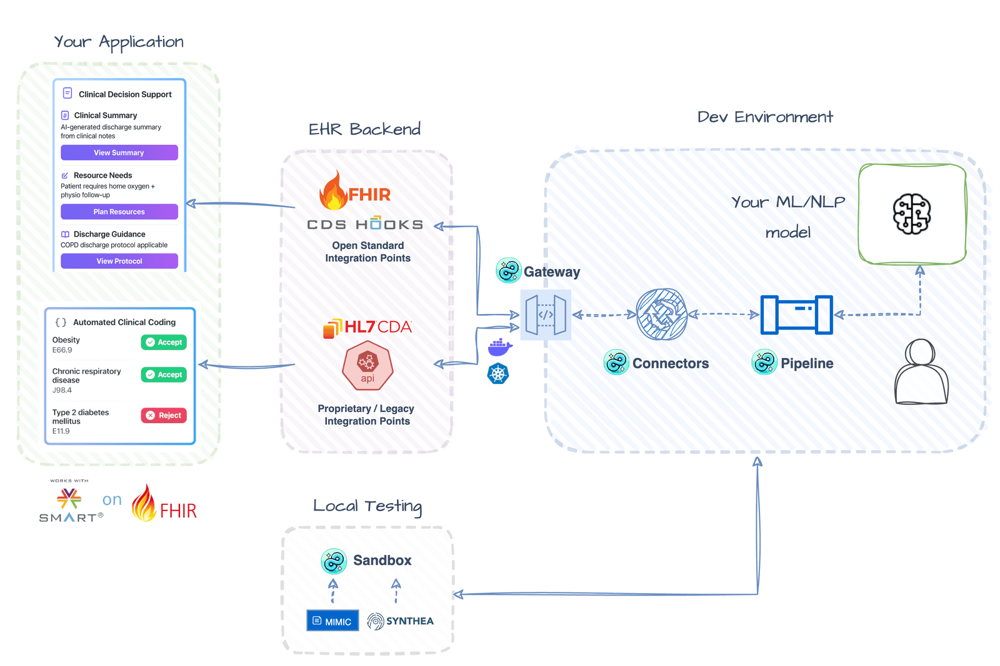

Build a CDS Hooks Service for Discharge Summarization
This example shows you how to build a CDS service that integrates with EHR systems. We'll automatically summarize discharge notes and return actionable recommendations using the CDS Hooks standard.
Check out the full working example here!

Illustrative Architecture - actual implementation may vary.Setup
Make sure you have a Hugging Face API token and set it as the HUGGINGFACEHUB_API_TOKEN environment variable.
import getpass
import os
if not os.getenv("HUGGINGFACEHUB_API_TOKEN"):
os.environ["HUGGINGFACEHUB_API_TOKEN"] = getpass.getpass(
"Enter your token: "
)
If you are using a chat model, make sure you have the necessary langchain packages installed.
Initialize the pipeline
First, we'll create a summarization pipeline with domain-specific prompting for discharge workflows. You can choose between:
- Transformer models fine-tuned for clinical summarization (like
google/pegasus-xsum) - Large Language Models with custom clinical prompting (like
zephyr-7b-beta)
For LLM approaches, we'll use LangChain for better prompting.
from healthchain.pipeline import SummarizationPipeline
from langchain_huggingface.llms import HuggingFaceEndpoint
from langchain_huggingface import ChatHuggingFace
from langchain_core.prompts import PromptTemplate
from langchain_core.output_parsers import StrOutputParser
hf = HuggingFaceEndpoint(
repo_id="deepseek-ai/DeepSeek-R1-0528",
task="text-generation",
max_new_tokens=512,
do_sample=False,
repetition_penalty=1.03,
)
model = ChatHuggingFace(llm=hf)
template = """
You are a discharge planning assistant for hospital operations.
Provide a concise, objective summary focusing on actionable items
for care coordination, including appointments, medications, and
follow-up instructions. Format as bullet points.\n'''{text}'''
"""
prompt = PromptTemplate.from_template(template)
chain = prompt | model | StrOutputParser()
pipeline = SummarizationPipeline.load(chain, source="langchain")
The SummarizationPipeline automatically:
- Parses FHIR resources from CDS Hooks requests
- Extracts clinical text from discharge documents
- Formats outputs as CDS cards according to the CDS Hooks specification
Add the CDS FHIR Adapter
The CdsFhirAdapter converts between CDS Hooks requests and HealthChain's Document format. This makes it easy to work with FHIR data in CDS workflows.
from healthchain.io import CdsFhirAdapter
cds_adapter = CdsFhirAdapter()
# Parse the CDS request to a Document object
cds_adapter.parse(request)
# Format the Document object back to a CDS response
cds_adapter.format(doc)
What this adapter does
- Parses FHIR resources from CDS Hooks requests
- Extracts text from DocumentReference resources
- Formats responses as CDS cards according to the CDS Hooks specification
Set Up the CDS Hook Handler
Create the CDS Hooks handler to receive discharge note requests, run the AI summarization pipeline, and return results as CDS cards.
from healthchain.gateway import CDSHooksService
from healthchain.models import CDSRequest, CDSResponse
# Initialize the CDS service
cds_service = CDSHooksService()
# Define the CDS service function
@cds_service.hook("encounter-discharge", id="discharge-summary")
def handle_discharge_summary(request: CDSRequest) -> CDSResponse:
"""Process discharge summaries with AI"""
# Parse CDS request to internal Document format
doc = cds_adapter.parse(request)
# Process through AI pipeline
processed_doc = pipeline(doc)
# Format response with CDS cards
response = cds_adapter.format(processed_doc)
return response
Build the Service
Register the CDS service with HealthChainAPI to create REST endpoints:
from healthchain.gateway import HealthChainAPI
app = HealthChainAPI(title="Discharge Summary CDS Service")
app.register_service(cds_service)
Test with Sandbox
Use the sandbox utility to test the service with sample data:
Download Sample Data
Download sample discharge note files from cookbook/data and place them in a data/ folder in your project root.
import healthchain as hc
from healthchain.sandbox.use_cases import ClinicalDecisionSupport
from healthchain.models import Prefetch
from healthchain.data_generators import CdsDataGenerator
@hc.sandbox(api="http://localhost:8000")
class DischargeNoteSummarizer(ClinicalDecisionSupport):
def __init__(self):
super().__init__(path="/cds-services/discharge-summary")
self.data_generator = CdsDataGenerator()
@hc.ehr(workflow="encounter-discharge")
def load_data_in_client(self) -> Prefetch:
data = self.data_generator.generate(
free_text_path="data/discharge_notes.csv", column_name="text"
)
return data
Run the Complete Example
Put it all together and run both the service and sandbox:
import uvicorn
import threading
# Start the API server in a separate thread
def start_api():
uvicorn.run(app, port=8000)
api_thread = threading.Thread(target=start_api, daemon=True)
api_thread.start()
# Start the sandbox
summarizer = DischargeNoteSummarizer()
summarizer.start_sandbox()
Service Endpoints
Once running, your service will be available at:
- Service discovery:
http://localhost:8000/cds-services - Discharge summary endpoint:
http://localhost:8000/cds-services/discharge-summary
Example CDS Response
{
"cards": [
{
"summary": "Discharge Transportation",
"indicator": "info",
"source": {
"label": "HealthChain Discharge Assistant"
},
"detail": "• Transport arranged for 11:00 HRs\n• Requires bariatric ambulance and 2 crew members\n• Confirmation number: TR-2024-001"
},
{
"summary": "Medication Management",
"indicator": "warning",
"source": {
"label": "HealthChain Discharge Assistant"
},
"detail": "• Discharge medications: Apixaban 5mg, Baclofen 20mg MR\n• New anticoagulation card prepared\n• Collection by daughter scheduled"
}
]
}
What You've Built
A CDS Hooks service for discharge workflows that integrates seamlessly with EHR systems:
- Standards-compliant - Implements the CDS Hooks specification for EHR interoperability
- AI-powered summarization - Processes discharge notes using transformer models or LLMs
- Actionable recommendations - Returns structured cards with discharge planning tasks
- Flexible pipeline - Supports both fine-tuned models and prompt-engineered LLMs
- Auto-discovery - Provides service discovery endpoint for EHR registration
Use Cases
-
Discharge Planning Coordination Automatically extract and highlight critical discharge tasks (appointments, medications, equipment needs) to reduce care coordination errors and readmissions.
-
Clinical Decision Support Provide real-time recommendations during discharge workflows, surfacing potential issues like medication interactions or missing follow-up appointments.
-
Documentation Efficiency Generate concise discharge summaries from lengthy clinical notes, saving clinicians time while ensuring all critical information is captured.
Next Steps
- Enhance prompts: Tune your clinical prompts to extract specific discharge criteria or care plan elements.
- Add validation: Implement checks for required discharge elements (medications, follow-ups, equipment).
- Multi-card support: Expand to generate separate cards for different discharge aspects (medication reconciliation, transportation, follow-up scheduling).
- Integrate with workflows: Deploy to Epic App Orchard or Cerner Code Console for production EHR integration.